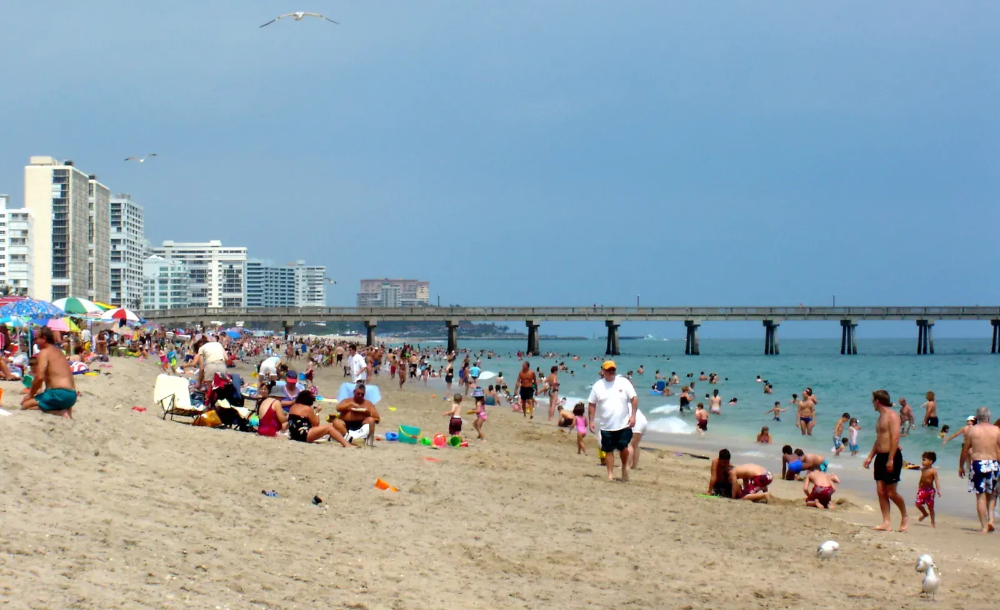

Em Deerfield Beach, as casas à venda vão de apartamentos de revenda em grandes condomínios 55+ até casas térreas no interior da cidade e mansões no Intracoastal, perto de Hillsboro Beach. O preço muda muito entre apartamento e casa e conforme a distância da água. O escritório da Royal Star Corp fica em Coral Springs, ali perto, também no condado de Broward, e o Rui Cunha, corretor brasileiro, atende compradores e vendedores em Deerfield Beach como parte do trabalho dele em toda a Flórida.
Como é morar em Deerfield Beach
Deerfield Beach é uma cidade de praia no extremo norte do condado de Broward, vizinha de Boca Raton e Pompano Beach. O Census estimou a população em 87.325 habitantes em julho de 2023 (Census QuickFacts). A praia e o Intracoastal atraem muita gente, mas a maior parte da cidade fica no interior, com ruas residenciais tranquilas e muitos condomínios.
Para famílias brasileiras
Deerfield Beach tem uma comunidade brasileira conhecida, a ponto de a cidade ganhar o apelido de "Deerfield de Janeiro". Muitos brasileiros se instalaram em Deerfield, Pompano e Coconut Creek a partir do fim dos anos 1990, e há comércio brasileiro ao longo das avenidas principais (WLRN; Florida Connexion). E se você ainda não tem Social Security, existe o financiamento com ITIN, sujeito à aprovação do banco.
Bairros e comunidades
- Century Village East. Grande comunidade 55+ com cerca de 8.508 unidades, só de revenda, com preços em geral entre US$ 100 mil e US$ 300 e poucos mil (55places).
- Quiet Acres e The Cove. Bairros de casas. Uma imobiliária local cita faixa típica de US$ 380 mil a US$ 700 mil (Premier Estate Properties).
- Deer Creek. Comunidade residencial dentro da cidade (BEX Realty).
- Hillsboro Beach (vizinha). Cidade separada, na ilha, com mansões de frente para o Intracoastal, muitas acima de US$ 2 milhões (Premier Estate Properties).
Mercado imobiliário em Deerfield Beach
Segundo o Redfin, o preço mediano de venda em Deerfield Beach foi de cerca de US$ 262 mil em março de 2026, uns 8% abaixo do ano anterior (Redfin). Os imóveis levaram em média uns 89 dias para vender no período até maio de 2026.
Esse número baixo não quer dizer que casa esteja barata. A cidade tem muitos apartamentos e unidades 55+, e isso puxa a mediana para baixo. Corretores locais dizem que os imóveis de frente para a água não caíram do mesmo jeito (Tinka Ellington Group). Os preços variam muito por rua, tipo de imóvel e distância da água. Peça ao Rui uma comparação atualizada das vendas recentes para o tipo de imóvel que você procura.
Cuidados práticos: condomínio, seguro e enchente
Prédios mais antigos. Desde a lei de segurança de condomínios de 2022, prédios de três andares ou mais precisam de inspeções periódicas (aos 30 anos, ou 25 se a prefeitura/condado exigir — SB 154, 2023) e de um estudo de reservas estruturais, e as reservas precisam ser financiadas (Rimkus). Há relatos de cobranças extras (special assessments) de US$ 10 mil a mais de US$ 100 mil, principalmente em comunidades 55+ antigas (24-7 Press Release). Antes da oferta, peça o estudo de reservas, o orçamento e o histórico de cobranças extras.
Seguro e enchente. Imóveis perto da praia e do Intracoastal ficam em áreas de maior risco de enchente. A nova forma de cálculo da FEMA aumentou mais o seguro contra enchente nas áreas costeiras de Broward e Palm Beach; no interior, ficou mais estável (WLRN). Quem tem seguro pela Citizens, a seguradora estadual, vai precisar de cobertura contra enchente, exigência que entra aos poucos até 2027 (News4JAX). Faça a cotação do seguro antes de assinar.
Impostos. Se o imóvel for sua residência principal, você pode ter direito à isenção homestead. Converse com um contador sobre o seu caso.
Escolas
Deerfield Beach é atendida pelas escolas públicas do condado de Broward (Broward County Public Schools). A Deerfield Beach High School fica na 910 SW 15th Street (Broward Schools). Consulte as notas das escolas no site do Departamento de Educação da Flórida e confirme a escola de cada endereço.
Como se locomover
Deerfield Beach fica entre Boca Raton, ao norte, e Pompano Beach, ao sul, e muita gente trabalha ou faz compras nas duas. O tempo de trânsito muda bastante conforme o horário, então faça o trajeto no horário de pico antes de escolher o bairro.
Comprar com o Rui em Deerfield Beach
O Rui trabalha com imóveis no sul da Flórida desde 2003, primeiro como mortgage broker e depois como broker e General Contractor licenciado. Ele ajuda você a comprar casa na Flórida, a entender o financiamento com ITIN ou a vender seu imóvel. Faça as contas na calculadora de financiamento e compare com Pompano Beach e Coconut Creek.
Perguntas frequentes
Os preços das casas em Deerfield Beach estão caindo?
O Redfin apontou mediana de cerca de US$ 262 mil em março de 2026, uns 8% abaixo do ano anterior. Esse número é muito influenciado pelos apartamentos. Corretores locais dizem que os imóveis de frente para a água não seguiram a mesma tendência, então vale olhar as vendas recentes do tipo de imóvel que você quer.
O que conferir antes de comprar apartamento em Deerfield Beach?
Peça o estudo de reservas do prédio, o orçamento atual, a situação das inspeções e o histórico de cobranças extras. Prédios antigos podem precisar de reformas caras pelas regras de 2022, e quem paga são os proprietários.
Tem muitos brasileiros em Deerfield Beach?
Sim. A cidade tem uma comunidade brasileira conhecida, com comércio e serviços em português, e faz parte da região (junto com Pompano e Coconut Creek) onde muitos brasileiros se instalaram desde o fim dos anos 1990.
Dá para comprar casa em Deerfield Beach sem Social Security?
Muitos compradores usam o financiamento com ITIN, sempre sujeito à aprovação do banco. O Rui explica o que os bancos costumam pedir. Veja o guia de financiamento com ITIN ou fale com o Rui.
Fale com o Rui
Pensando em Deerfield Beach? Peça ao Rui uma comparação de preços atualizada das ruas que você gostou.